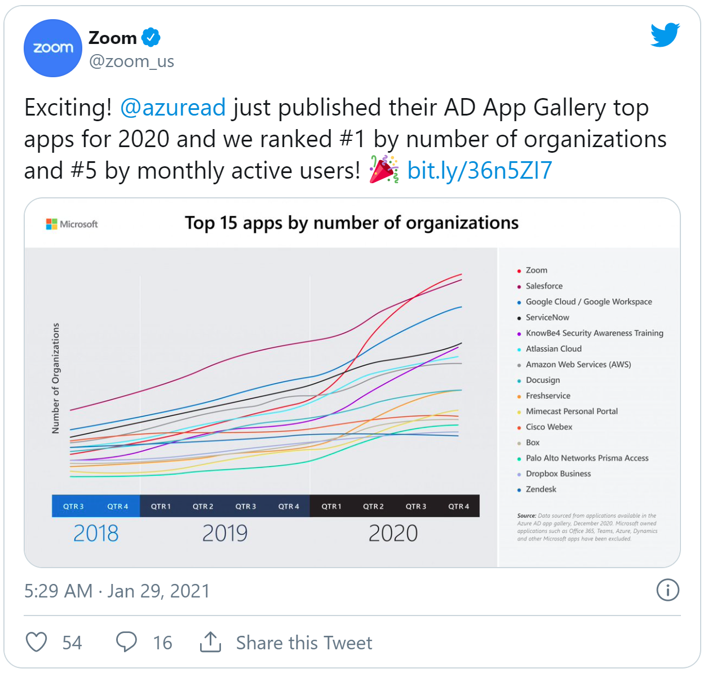
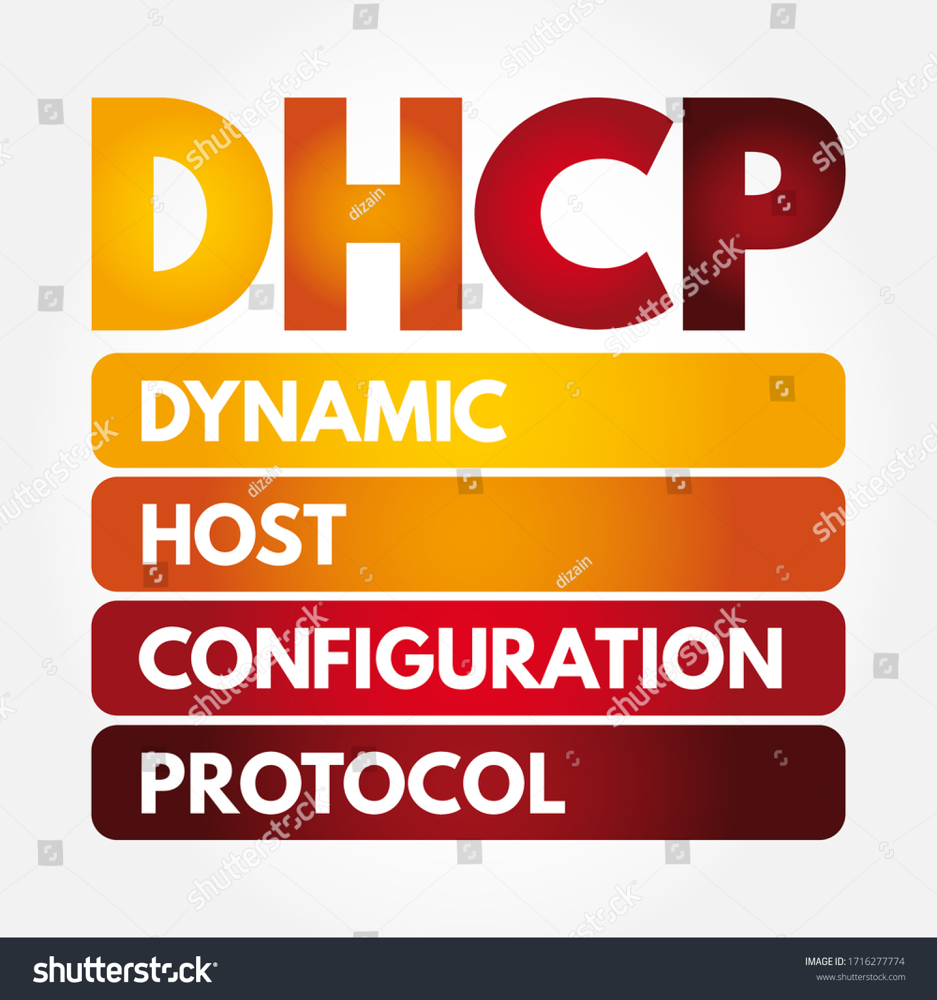
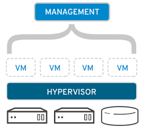
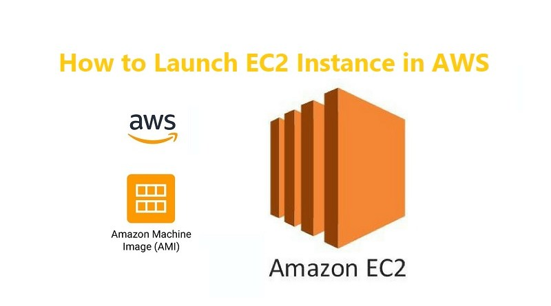
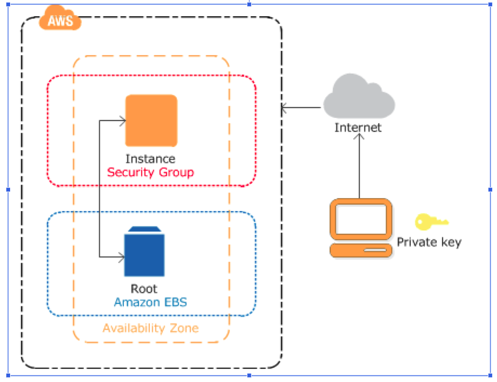
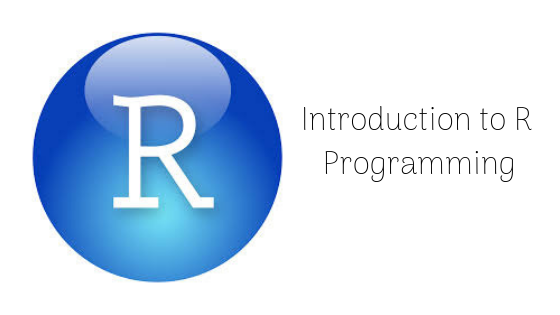

Cloud Technology for Hybrid/Blended Learning
Blended learning Environment becomes the important part of providing educational continuity. Now in all around world University or School leaders are expanding their educational planning for how they continue to support Blended classroom Environments in the post pandemic situation. When inclement weather, poor air quality, illness, travel, or other issues prevent students from attending class in offline mode, hybrid classroom setups allow learning to continue from virtually anywhere..
Introduction to Cloud Computing
Cloud computing is the on-demand availability of computer system resources, especially data storage (cloud storage) and computing power, without direct active management by the user.

HandWash Data-Analytics
.A deadly disease affecting women that just have given birth. He is thinking about it because in the early 1840s at the Vienna General Hospital as many as 10% of the women giving birth die from it. He is thinking about it because he knows the cause of childbed fever: It's the contaminated hands of the doctors delivering the babies. And they won't listen to him and wash their hands!.

Concept of DHCP
.Dynamic Host Configuration Protocol (DHCP) is a network management protocol used to automate the process of configuring devices on IP networks, thus allowing them to use network services such as DNS, NTP, and any communication protocol based on UDP or TCP.
Git Basics
Git is a free and open source distributed version control system designed to handle everything from small to very large projects with speed and efficiency.

Resource Management in Virtualization
Resource management is an essential technique to utilize the underlying hardware of the cloud efficiently.

Android Kotlin Fundamentals
Android Studio provides a complete IDE, including an advanced code editor and app templates. It also contains tools for development, debugging, testing, and performance that make it faster and easier to develop apps.

Amazon Elastic Compute Cloud (Amazon EC2)
Amazon Elastic Compute Cloud (Amazon EC2) provides scalable computing capacity in the Amazon Web Services (AWS) Cloud. Using Amazon EC2 eliminates your need to invest in hardware up front, so you can develop and deploy applications faster.

Launching a Linux EC2 Instance
.When you sign up for AWS, you can get started with Amazon EC2 using the AWS Free Tier. If you created your AWS account less than 12 months ago, and have not already exceeded the free tier benefits for Amazon EC2, it will not cost you anything to complete this tutorial, because we help you select options that are within the free tier benefits.

Intro to R Programming Language
R provides a wide variety of statistical (linear and nonlinear modelling, classical statistical tests, time-series analysis, classification, clustering and etc) and graphical techniques, and is highly extensible.

Kotlin Basic RoadMap
The Android Kotlin Fundamentals course was created by the Google Developers Training team. In the course, you learn Android Kotlin programming concepts and build a variety of apps
Hyper V Overview
Hyper-V is Microsoft’s virtualization platform, or ‘hypervisor’, which enables administrators to make better use of their hardware by virtualizing multiple operating systems to run off the same physical server simultaneously